This vignette shows every plot type of plot2(), with the
data that each type needs. The examples use the
admitted_patients data set from this package and data sets
from base R and ggplot2.
Choosing a type
Without a type, plot2() chooses one from
the data:
- a boxplot if there is no
x, or if every group ofx,categoryandfacetcontains at least three values; - points if
xandyare both numeric; - a histogram if
xis the only numeric column; - columns otherwise (set the option
plot2.default_typeto change this).
The type argument sets the type explicitly. It accepts
the name of any ggplot2 geom, with or without the prefix
geom_, such as "col", "line" or
"geom_point". Several types also have an abbreviation:
| Type | type |
Abbreviation | Requires |
|---|---|---|---|
| Column | "col" |
"c" |
|
| Bar (horizontal column) | "bar" |
||
| Bar with percentages | "barpercent" |
"bp" |
|
| Line | "line" |
"l" |
|
| Line with points | "linedot" |
"ld", "lp"
|
|
| Area | "area" |
"a" |
|
| Point | "point" |
"p" |
|
| Jitter | "jitter" |
"j" |
|
| Beeswarm | "beeswarm" |
"bs" |
ggbeeswarm |
| Boxplot | "boxplot" |
"b" |
|
| Violin | "violin" |
"v" |
|
| Histogram | "histogram" |
"h" |
|
| Density | "density" |
||
| Dumbbell | "dumbbell" |
"d", "db"
|
|
| Back-to-back | "back-to-back" |
"b2b" |
patchwork |
| Heatmap | "tile" |
||
| Sankey | "sankey" |
"s" |
ggforce |
| Spider | "spider" |
"sp" |
|
| UpSet | "upset" |
"u" |
|
| Map | "sf" |
sf |
All other ggplot2 geoms can be used as well, such as
"step" or "text". Arguments that
plot2() does not know, such as fill or
outlier.shape, are passed on to the geom through
....
Column and bar
Columns compare a value between groups. y is often a
calculation, such as n() for the number of rows, which
plot2() computes per group:
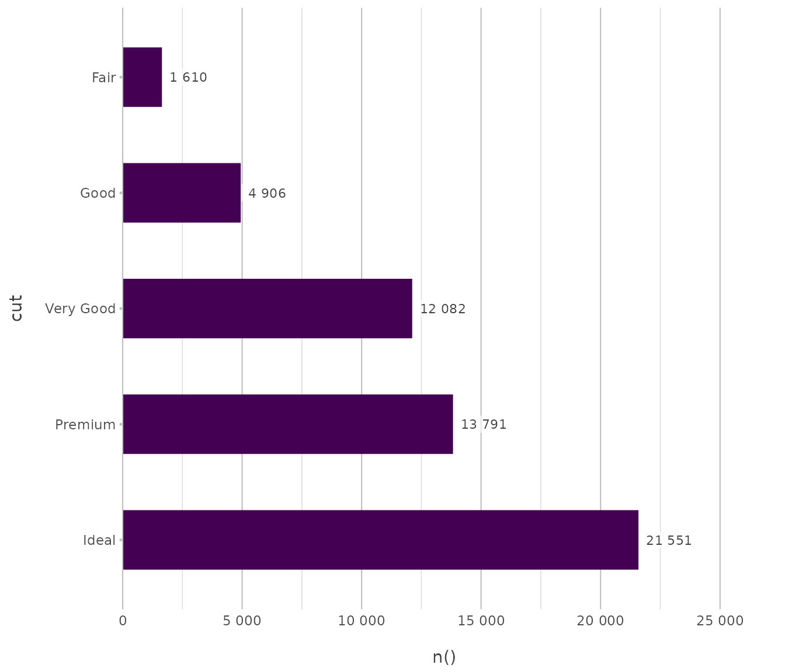
In ggplot2, columns and bars are the same geom.
Following the common use of these terms, plot2() draws bars
horizontally:
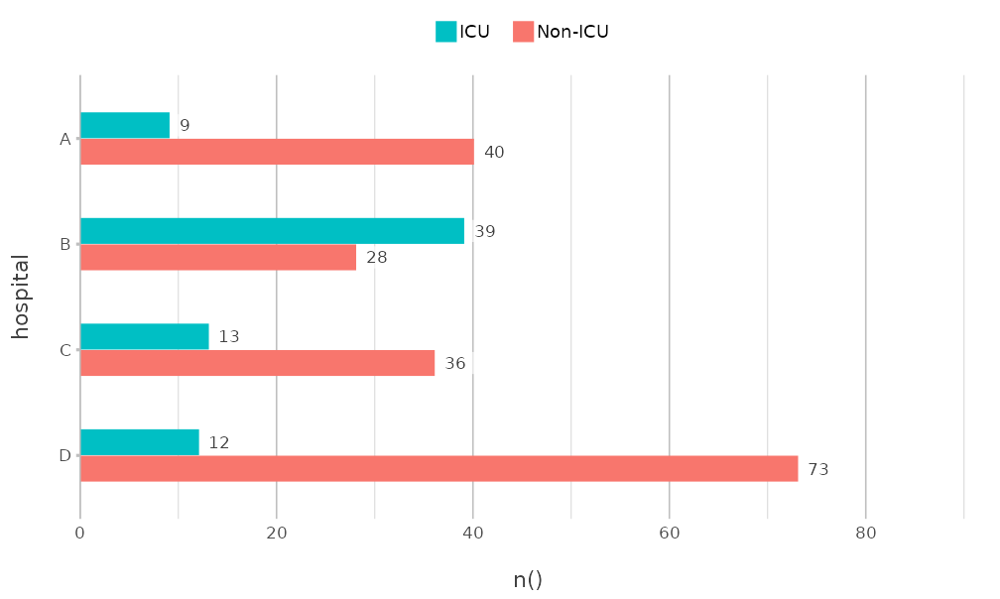
Columns of different categories are placed next to each other. Use
stacked = TRUE to stack them, or
stacked_fill = TRUE to stack them to 100%.
Bar with percentages
type = "barpercent" shows the ten most frequent values
as bars, with their counts and percentages. The remaining values are
combined into one bar:
ggplot2::mpg |>
plot2(x = manufacturer, type = "barpercent")
#> Using y = n() to count rows, since type = "barpercent" shows frequencies
#> Summarising values for type = "barpercent" using summarise_function = sum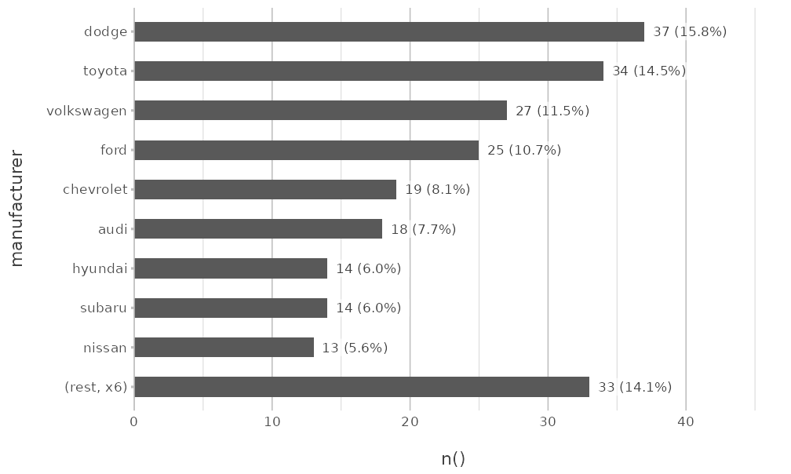
This type sets type = "bar",
x.sort = "freq-desc", x.max_items = 10 and
datalabels.format = "%n (%p)". Each of these can be
changed.
Line
Lines show a trend over an ordered x, such as time:
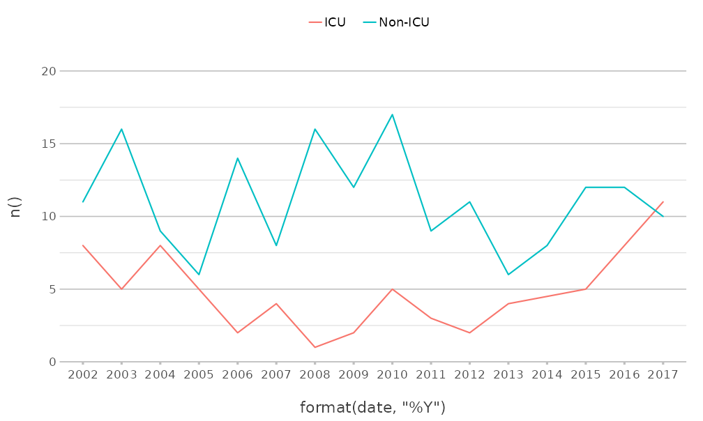
type = "linedot" adds points to the line, like
type = "b" in base R’s plot():
Area
Stacked areas show how parts add up to a total over an ordered
x. Not every hospital has admissions in every year, so
x.complete = 0 adds the missing years with a count of zero;
without it, the areas would skip these years:
admitted_patients |>
plot2(x = format(date, "%Y"),
y = n(),
category = hospital,
type = "area",
stacked = TRUE,
x.complete = 0)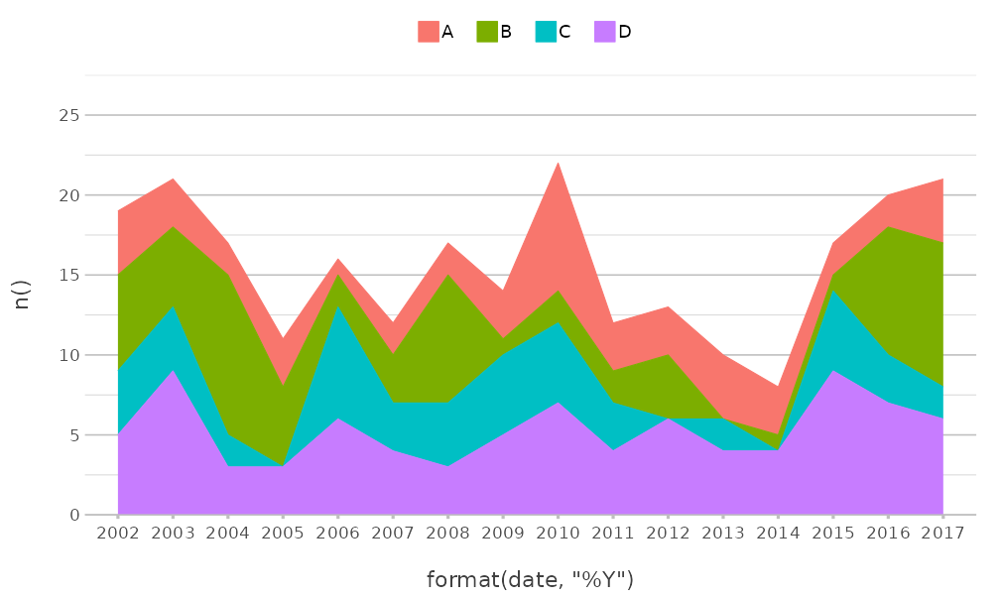
Point, jitter and beeswarm
Points show the relation between two numeric variables. This is the
automatic type when x and y are both
numeric:
mtcars |>
plot2(x = wt, y = mpg, category = factor(cyl), category.title = "Cylinders")
#> Using type = "point" since both axes are numeric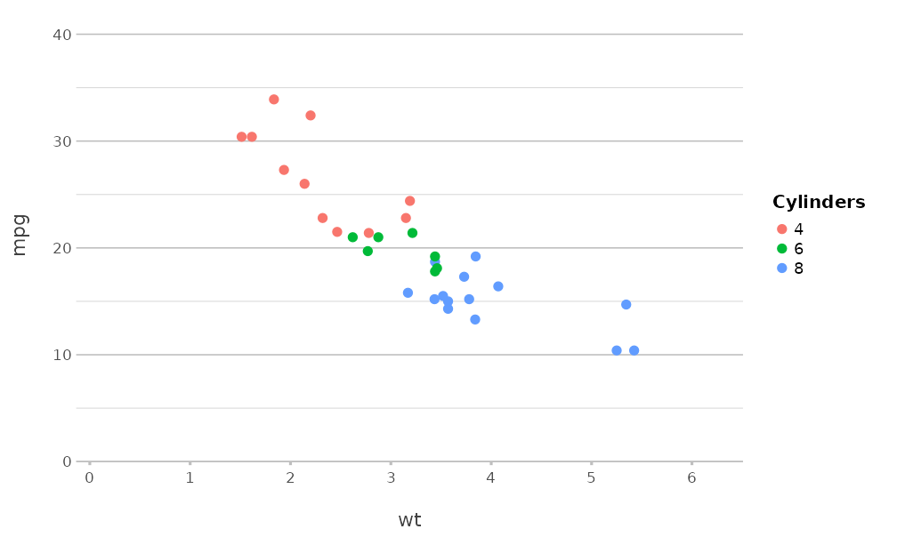
For a discrete x, points of the same group overlap.
Jitter moves them randomly in the horizontal direction, and a beeswarm
places them next to each other:
admitted_patients |>
plot2(x = ward, y = age, type = "jitter")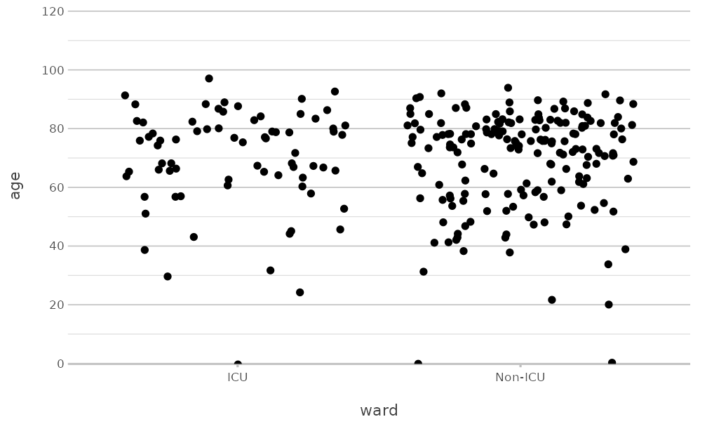
iris |>
plot2(x = Species, y = Sepal.Length, type = "beeswarm")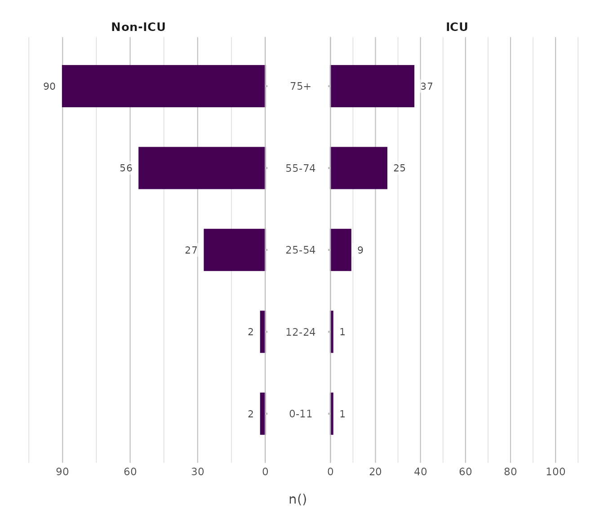
Boxplot and violin
Boxplots and violins summarise a distribution per group. A boxplot is the automatic type when every group contains at least three values:
admitted_patients |>
plot2(x = hospital, y = age, category = gender)
#> Using type = "boxplot" since all groups in hospital and gender contain at least three values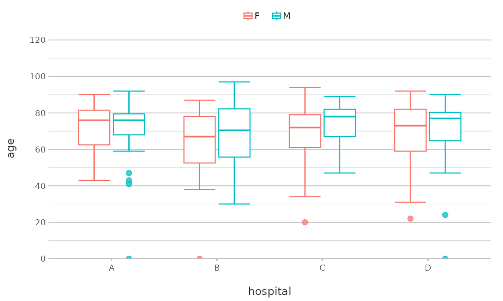
y can also be several columns, which are then shown as a
category:
iris |>
plot2(x = Species, y = where(is.double))
#> Using y = c(Petal.Length, Petal.Width, Sepal.Length, Sepal.Width)
#> Using type = "boxplot" since all groups in Species and category contain at least three values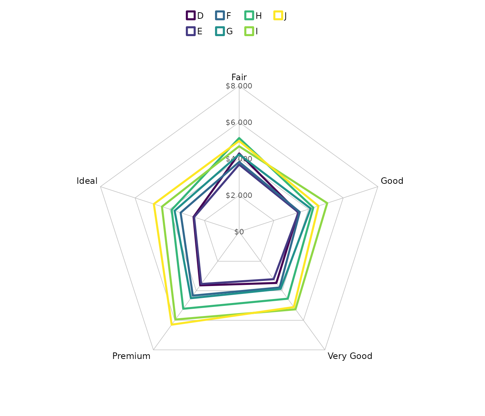
A violin also shows the shape of the distribution, with lines at the quartiles:
admitted_patients |>
plot2(x = ward, y = age, type = "violin")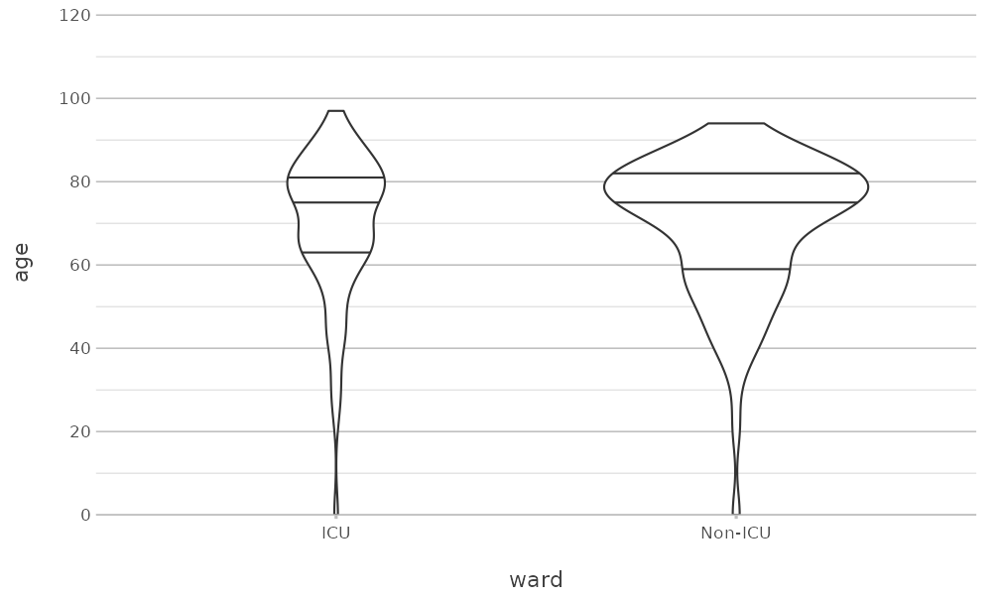
Histogram and density
A histogram shows the distribution of one numeric variable.
plot2() chooses the bin width from the data and adds the
density as a line; set binwidth and
smooth = FALSE to change this:
admitted_patients |>
plot2(x = age, type = "histogram")
#> Using binwidth = 6.4 based on data
#> Assuming smooth = TRUE for type = "histogram"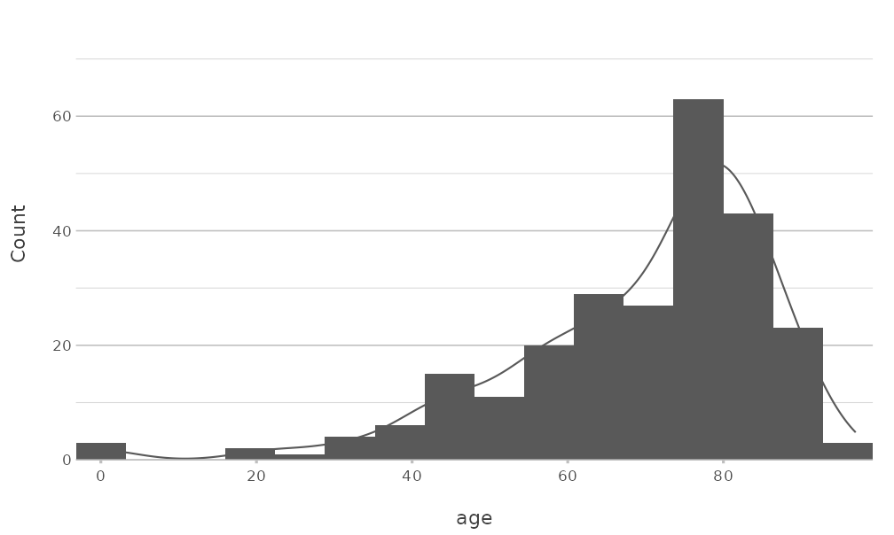
A density plot shows the distribution as a smooth curve, which makes it easier to compare groups. Transparency keeps overlapping groups visible:
iris |>
plot2(x = Sepal.Length, category = Species, type = "density", colour_transparency = 0.5)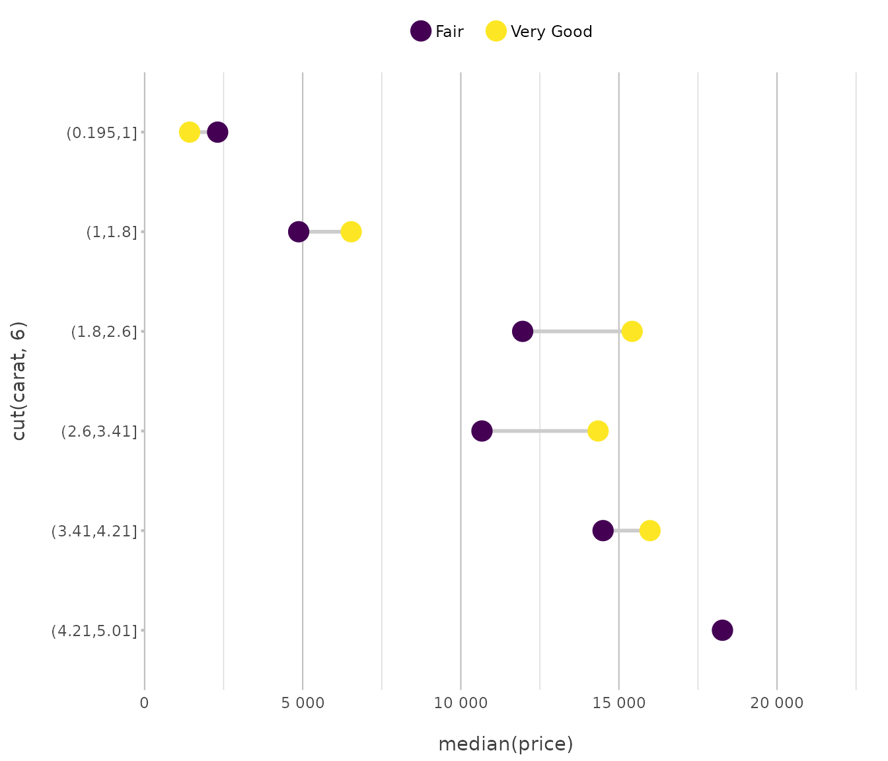
Dumbbell
A dumbbell plot compares two groups per value of x, with
a line between the two points. The category must have
exactly two values:

Back-to-back
A back-to-back plot, also known as a butterfly plot or population
pyramid, shows two groups on either side of a shared axis. The
facet must have exactly two values:
admitted_patients |>
plot2(x = age_group, y = n(), facet = gender, type = "back-to-back")
#> This additional argument was given to the geom: show.legend
#> Assuming y.expand = 0 since y.limits is set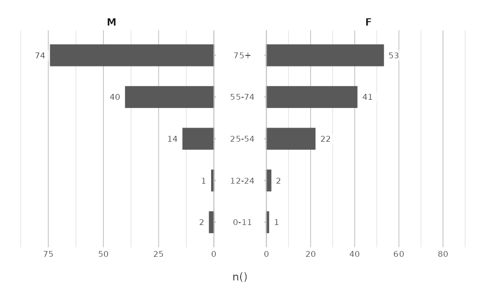
A category divides each side further:
admitted_patients |>
plot2(x = age_group, y = n(), category = ward, facet = gender, type = "back-to-back")
#> This additional argument was given to the geom: show.legend
#> Assuming y.expand = 0 since y.limits is set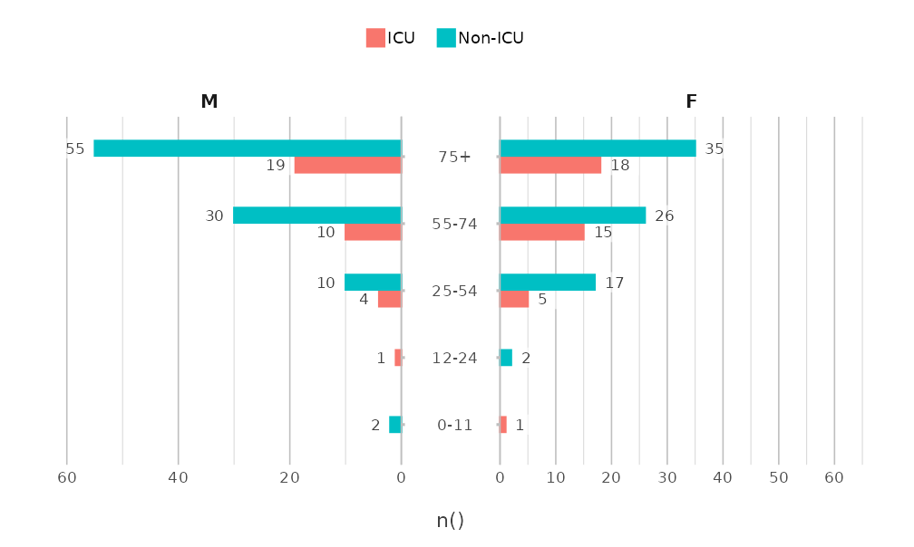
Heatmap
A matrix with the same row and column names, such as a correlation matrix, becomes a heatmap. Three colours give a scale that diverges from the midpoint:
mtcars |>
cor() |>
plot2(colour = c("#2166AC", "white", "#B2182B"),
category.title = "Correlation")
#> Assuming type = "tile" since the matrix contains identical row and column names
#> Using category.midpoint = 0 (the current category scale centre)
#> Omitting printing of 121 datalabels - use datalabels = TRUE to force printing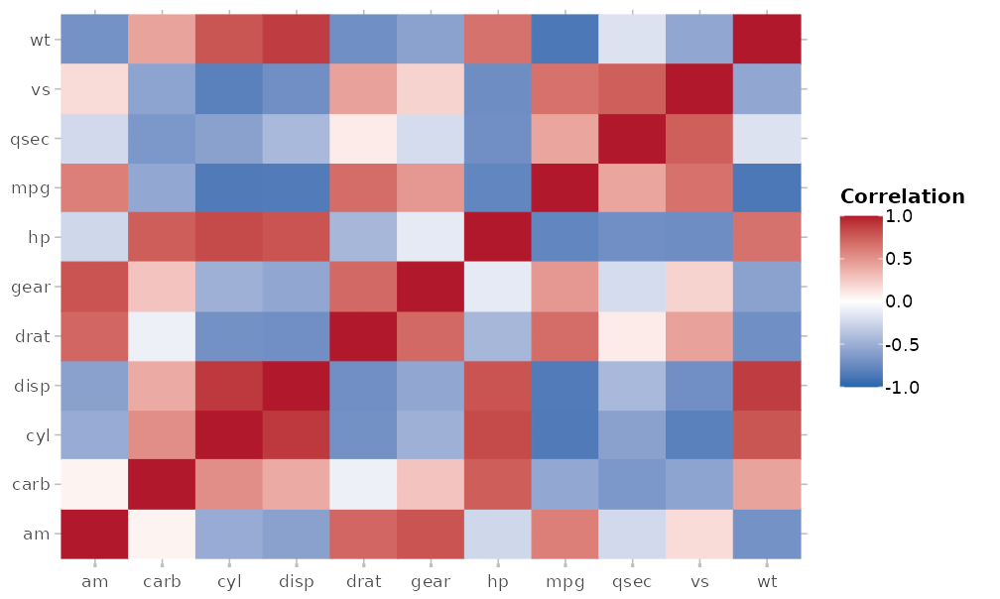
Sankey
A Sankey plot shows how observations flow between the values of
several variables. x contains these variables, and
category colours the flows:
Titanic |>
plot2(x = c(Class, Age, Survived), category = Sex, type = "sankey")
#> Assuming sankey_remove_axes = TRUE
#> Input class 'table' was transformed using `as.data.frame()`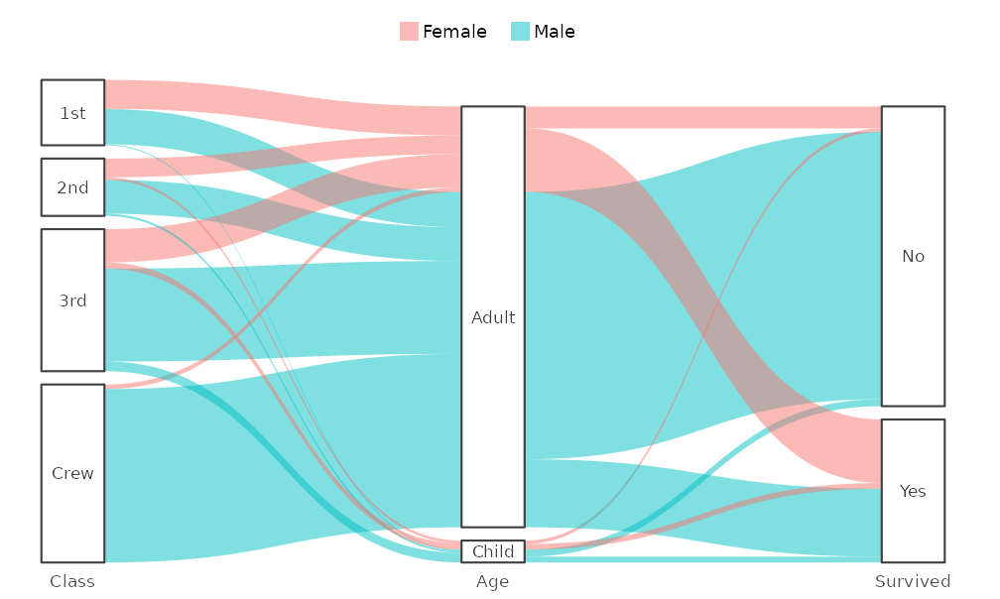
Titanic is a table from base R. plot2()
converts tables to a data frame with a column Freq, which
it uses as y.
Spider
A spider plot, also known as a radar chart, shows several values per
group on axes that are arranged in a circle. x gives the
axes, and category the groups:
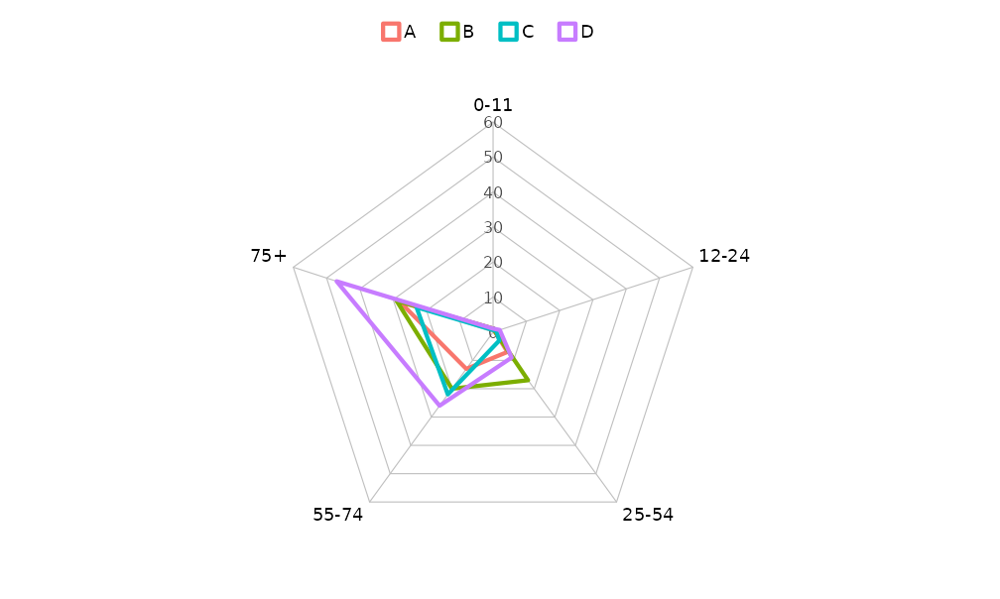
The spider plot uses coord_spider(), a coordinate system
of this package with straight grid lines between the axes.
UpSet
An UpSet plot shows the sizes of the intersections of several sets.
x contains logical columns or columns with 0 and 1, one per
set. This example defines four sets of cars:
mtcars |>
transform(manual = am == 1,
straight_engine = vs == 1,
four_gears = gear == 4,
economical = mpg > 20) |>
plot2(x = c(manual, straight_engine, four_gears, economical), type = "upset")
#> Using y = 1
#> Using summarise_function = sum for UpSet plot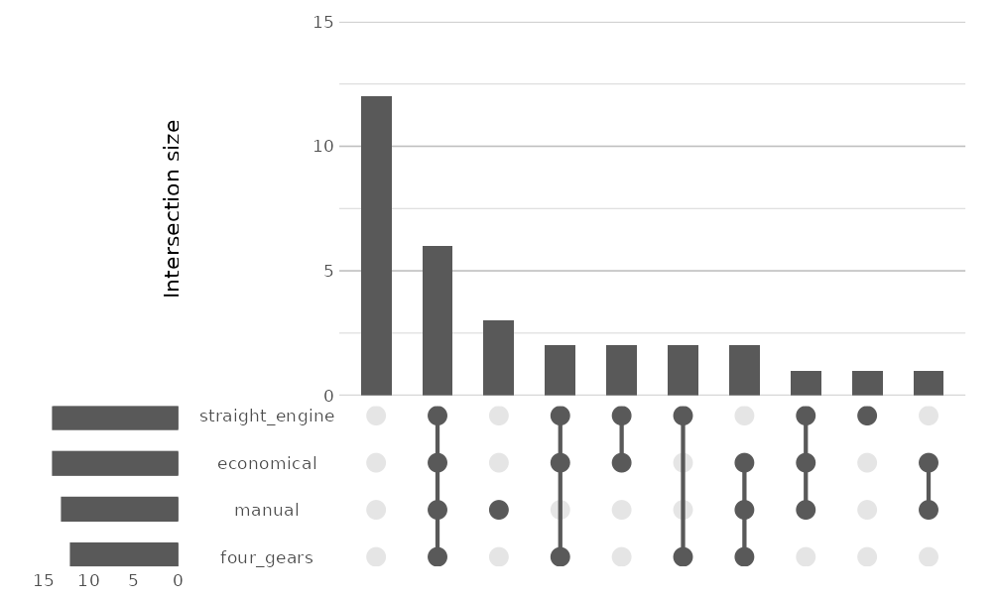
With a y, the bars show a summary of y per
intersection instead of the counts:
mtcars |>
transform(manual = am == 1,
straight_engine = vs == 1,
four_gears = gear == 4,
economical = mpg > 20) |>
plot2(x = c(manual, straight_engine, four_gears, economical),
y = median(hp),
y.title = "Median horsepower",
type = "upset")
#> Using summarise_function = sum for UpSet plot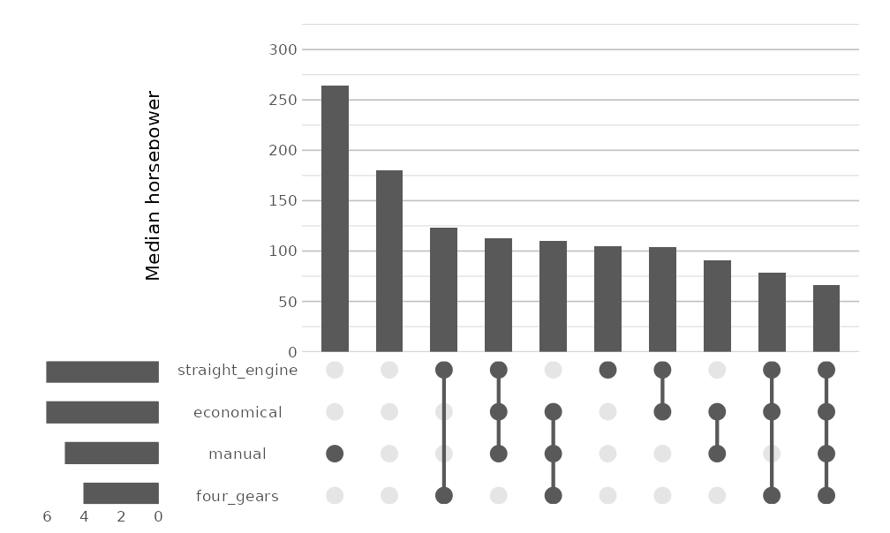
Map
Geographic data of class sf become maps. The data set
netherlands contains the provinces of the Netherlands, with
their area:
netherlands |>
plot2(category = area_km2, category.title = "Area (square kilometres)")
#> Using datalabels = province
#> Assuming datalabels.centroid = TRUE. Set to FALSE for a point-on-surface placing of datalabels.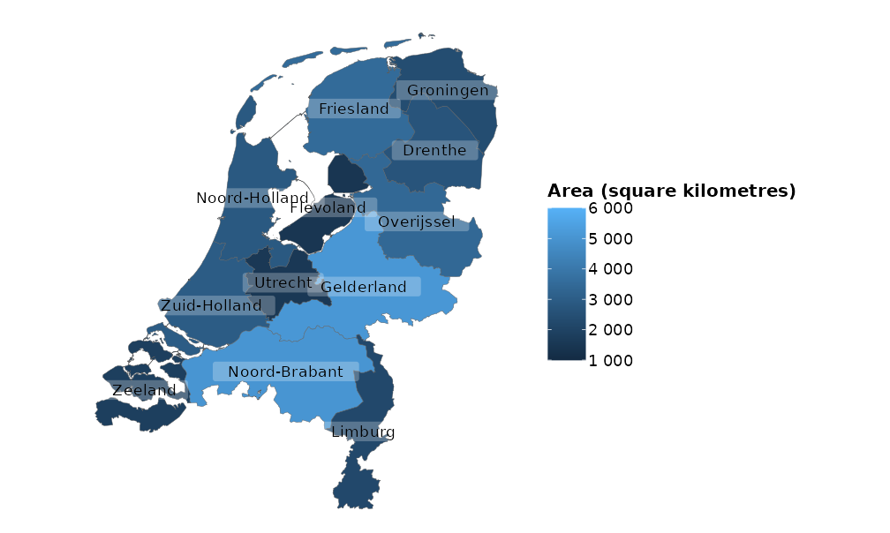
The article Maps on the package website shows more examples,
such as layers with add_sf().